Version 1.1.0.devel
Eigenschaften und Einschränkungen
Hervorgehobener Text zeigt Fenster-, Menü-, Schaltflächen-, Datei- oder Verzeichnisnamen an.
Ein Installations- oder Setupprogramm steht nicht zur Verfügung.
Das Archiv sollte nicht in c:\Program Files\ or c:\Program Files
(x86)\ installiert werden, da dazu unter manchen Windows Versionen Administratorrechte nötig sind. Da
Windows Kontrolle über diese Ordner behält, können weitere Probleme auftreten, wie durch das System gelöschte
oder ersetzte Dateien.
Das Zip-Archiv in einen beliebigen Ordner, wie z.B. c:\Meine Programme\Little Navmap extrahieren.
Das Programm anschließend durch Doppelklick auf die littlenavmap.exe starten. Siehe auch Erster Start für mehr Informationen.
Little Navmap ist ein 32-bit Programm und wurde mit Windows XP, Windows 7, Windows 8 and Windows 10 getestet.
Bild oben (anklicken für große Ansicht): Little Navmap Übersicht der wichtigsten Funktionen.
Die graphische Oberfläche von Little Navmap besteht aus mehreren Dock-Fenstern, die um das Karten- bzw. Hauptfenster angeordnet sind.
Die Dock-Fenster können im angedockten Zustand verschoben und auch vom Hauptfenster abgelöst werden, indem sie einfach vom Kartenfenster abgelöst werden. Alternativ kann man auch doppelt auf die Titelleiste oder auf das Fenstersymbol oben rechts klicken.
Ein Doppelklick auf die Titelzeile oder das Fenstersymbol bringt das Fenster zurück in seine angedockte Position.
Alle Dock-Fenster kann man schließen, wenn sie nicht gebraucht werden. Man kann die Dock-Fenster auch aufeinander stapeln, wobei dann eine Tableiste an der Unterseite des Stapels erscheint.
Werkzeugleisten können auch verschoben oder vom Hauptfenster abgelöst werden, wenn man auf das Symbol links auf der Leiste klickt.
Über das Menü Main Menu -> Window können Fenster oder Werkzeugleisten wieder
hervorgeholt werden.
Der Titel des Hauptfensters zeigt die aktuell gewählte Simulator-Datenbank
(FSX, FSXSE, P3DV2 oder P3DV3), den Dateinamen des Flugplanes
und ein angehängtes *, falls der Flugplan geändert wurde.
Fast alle Dialoge, Texte und alle Informationsfenster in Little Navmap erlauben Kopieren und
Einfügen von formatiertem Text. Der Text kann mit der Maus ausgewählt werden und dann entweder mit der Tastenkombination
Strg-C oder dem Kontextmenü in die Zwischenablage kopiert werden.
Die Tabellenansichten des Flugplanes oder der Suche erlauben es, den Inhalt im CSV-Format in die Zwischenablage zu kopieren.
Bild oben (anklicken für große Ansicht): Little Navmap
mit Karte und angedockten Fenstern. Die momentan ausgewählte Simulator-Datenbank ist FSX, der aktuelle Flugplan
ist IFR Les Eplatures (LSGC) to Dagali (ENDI).pln.
Little Navmap ist momentan nur in Englisch verfügbar. Trotz der englischen Sprache wird jedoch das Gebietsschema des Betriebssystems benutzt. Das heißt, dass z.B. im Deutschen ein Komma als Dezimaltrennzeichen anstatt des englischen Punktes benutzt wird.
Die Bildschirmfotos in dieser Anleitung wurden mit einem deutschen Gebietsschema erstellt. Daher wird das Komma als Dezimaltrennzeichen gezeigt.
Einheiten können momentan nicht eingestellt bzw. geändert werden. Es werden ausschließlich Fuß, nautische Meilen und Knoten verwendet.
Die Legende erklärt alle Kartensymbole und die Symbole des Flight Plan Elevation Profile Fensters.
Sie ist im Information Dock-Fenster sowie als Web-Dokument Little Navmap
Legend verfügbar.
Hervorgehobener Text zeigt Fenster-, Menü-, Schaltflächen-, Datei- oder Verzeichnisnamen an.
Options auf dem Tab Map Display ausgeschaltet werden.
Die folgenden Kriterien werden benutzt, um die Wertung zu berechnen. Jeder Punkt ergibt einen Stern:
Beim erstmaligen Starten von Little Navmap wird der Scenery Library Dialog angezeigt. Dort können alle erkannten Flugsimulatorinstallationen ausgewählt und ihre Szeneriebibliotheken in die interne Datenbank geladen werden. Für jeden Simulator wird eine Datenbank erstellt, die ohne Neustart des Programmes im Menü Scenery Library gewechselt werden kann.
Wenn beim ersten Start keine Flugsimulatorinstallation gefunden wurde, wird ein Warndialog angezeigt. Siehe Ohne Flugsimulatorinstallation laufen lassen für mehr Informationen.
Falls eine neue Version von Little Navmap installiert wurde, kann es sein, dass die Szeneriedatenbank aktualisiert werden muss. In diesem Fall wird ein Abfragedialog angezeigt, in dem das Löschen der inkompatiblen Datenbank oder Datenbanken bestätigt werden muss. Nach dem Löschen kann die interne Szeneriedatenbank wieder im Szenerie laden Dialog neu befüllt werden.
Dieses Kapitel beschreibt alle Menüpunkte von Little Navmap. Die Meisten sind auch auf den Werkzeugleisten aufzufinden, weswegen diese nicht gesondert beschrieben werden. Tastenkombinationen können in den Menüpunkten eingesehen werden und werden nicht separat aufgeführt.
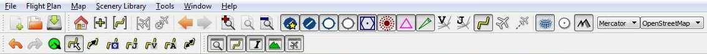
Bild oben: Menüs und Werkzeugleisten in ihren angedockten Standardpositionen.
Löscht den aktuellen Flugplan und erstellt einen neuen.
Öffnet einen Flugplan (PLN-Datei). FS9 Flugpläne werden nicht unterstützt.
Ein geöffneter Flugplan wird beim Neustart wieder geladen. Das Neuladen und das Anzeigen bzw. Zentrieren des
Flugplanes kann im Options Dialog auf den Startup und User Interface Tabs
eingestellt werden.
Start, Ziel und alle Wegpunkte werden an den aktuellen Flugplan angehängt.
Die Funktion Append Flight Plan erlaubt es, komplette Flugpläne oder Flugplanfragmente zu einem
neuen Flugplan zusammenzufügen. Alle Wegpunkte werden am Ende des aktuellen Flugplanes angehängt. Diese können
dann mit den Menüpunkten Delete selected Legs und Move selected Legs up/down aus dem
Kontextmenu verschoben werden. Siehe Flugplantabelle Kontextmenü für mehr
Informationen.
Speichert den aktuellen Flugplan in eine FSX PLN Date (XML-Format).
Little Navmap erlaubt es Flugpläne zu erstellen, die vom Flugsimulator nicht nutzbar sind. Das ist der Fall, wenn ein Flugplan keinen Flugplatz als Start- oder Zielposition hat. Ein Warndialog wird beim Speichern angezeigt, wenn das der Fall ist.
Ein Warndialog wird außerdem angezeigt, wenn der Startflugplatz Parkpositionen hat, im Flugplan jedoch keine benutzt wird.
Dieser Menüpunkt erlaubt es, Google Earth KML- bzw. KMZ-Dateien zur Kartenansicht hinzuzufügen. Die Dateien
werden beim Neustart wieder geladen. Das Neuladen und das Anzeigen bzw. Zentrieren des Flugplanes kann im
Options Dialog auf den Startup und User Interface Tabs eingestellt werden.
Entfernt alle geladenen Google Earth KML- bzw. KMZ-Dateien von der Karte.
Stoppt das Laden von Kartendaten aus dem Internet. Dies betrifft alle Onlinekarten, wie die OpenStreetMap, die OpenTopoMap sowie die Daten für das Flugplan-Höhenprofil.
Nachdem die Anwendung wieder auf Online Betrieb umgeschaltet wurde, sollte ein Neustart durchführt werden.
Beendet das Programm. Ein Abfragedialog erscheint, wenn der Flugplan noch Änderungen hat.
Erlaubt es, Änderungen am Flugplan rückgängig zu machen oder zu wiederholen.
Eine Parkposition (Rampe, Tankposition oder Flugsteig), Landebahn oder Helikopterlandeplatz kann mit dieser Funktion für den Startflugplatz festgelegt werden. Eine Startposition kann auch über das Kontextmenü der Karte mit dem Menüpunkt Set as Flight Plan Departure ausgewählt werden. Wenn keine Startposition ausgewählt wurde, wird automatisch ein Startpunkt auf der längsten Landebahn gewählt.

Bild oben: Der Auswahldialog für Startpositionen für Nürnberg (EDDN).
Schaltet den Drag-and-Drop Bearbeitungsmodus für den Flugplan in der Karte an oder aus. Siehe auch Flugplanbearbeitung auf der Karte.
Löscht alle Wegpunkte und verbindet Start und Ziel mit einer direkten Messlinie (Großkreisroute).
Flugpläne können zwischen allen Wegpunkttypen erstellt werden, sogar zwischen benutzerdefinierten Wegpunkten (zum
Erzeugen eines benutzerdefinierten Wegpunktes in die Karte rechtsklicken und Add Position to Flight
plan auswählen). Dies ermöglicht das Erstellen von Flugplanfragmenten, die zu Flugplänen zusammengefügt
bzw. kombiniert werden können. Sämtliche Berechnungsmodi für Flugpläne können auch auf Fragmente angewendet werden.
Berechnet einen Flugplan, der nur VOR- und NDB-Funkfeuer berücksichtigt. Bei der Berechnung wird, soweit möglich, sichergestellt, dass sich das Flugzeug immer in Reichweite eines Funkfeuers befindet. VOR-Funkfeuer werden gegenüber NDB-Funkfeuern bevorzugt und DME Stationen werden vermieden. Die Berechnung kann fehlschlagen, wenn nicht genügend Stationen zwischen Start und Ziel gefunden werden. In diesem Fall kann der Flugplan manuell erstellt werden.
Diese Berechnung kann auch dazu benutzt werden, um ein Flugplanfragment zwischen beliebigen Wegpunkten zu erzeugen.
Erstellt einen Flugplan entlang von Jet Luftstraßen.
Die sich aus der Berechnung ergebende minimale Reiseflughöhe wird in das Feld im Flugplanfenster eingetragen. Die Reiseflughöhe im Flugplanfenster wird nicht geändert, falls keine Höhenrestriktionen entlang der Luftstraßen gefunden wurden.
Eine vereinfachte Ost/West-Regel wird benutzt, um die Reiseflughöhe an gerade bzw. ungerade Flughöhen anzupassen.
Diese Anpassung kann im Options Dialog auf dem Flight Plan Tab ausgeschaltet werden.
Das Standardverhalten ist ein Sprung zum nächsten Wegpunkt einer passenden Luftstraße von der Startposition aus
und umgekehrt für das Ziel. Dieses Verhalten kann im Options Dialog im Flight Plan Tab
geändert werden, so dass VOR- oder NDB-Funkfeuer bevorzugt werden, um eine passende Luftstraße zu erreichen.
Das Luftstraßennetzwerk im Flugsimulator ist nicht komplett, z.B. fehlen die Nordatlantik-Tracks, welche sich täglich ändern. Daher kann die Berechnung über große Wasserflächen fehlschlagen. In diesem Fall kann der Flugplan manuell erstellt werden oder aus Fragmenten zusammengeführt werden.
Diese Berechnung kann auch dazu benutzt werden, um ein Flugplanfragment zwischen beliebigen Wegpunkten zu erzeugen.
Benutzt Victor Luftstraßen, um einen Flugplan zu erstellen. Alles Weitere ist gleich zu Calculate high
Altitude.
Benutzt das Feld Reiseflughöhe im Flugplanfenster, um einen geeigneten Flugplan entlang von Victor oder Jet
Luftstraßen zu berechnen. Die Berechnung kann fehlschlagen, wenn die Reiseflughöhe zu niedrig angesetzt wird.
Alles Weitere ist gleich zu Calculate high Altitude.
Vertauscht die Start- und Zielposition und kehrt die Reihenfolge aller Wegpunkte um. Die längste Landebahn wird automatisch als Startposition zugewiesen.
Springt auf der Karte zu dem Bereich, der mit Set Home festgelegt wurde. Das Zentrum
dieses Bereiches wird durch das Symbol  gekennzeichnet.
gekennzeichnet.
Springt auf der Karte zum Zentrum, das für die Distanzsuche festgelegt wurde. Siehe Set Center for Distance Search für mehr Informationen zur Distanzsuche. Das Zentrum für die Distanzsuche wird durch das Symbol markiert.
Zeigt den Flugplan auf der Karte.
Zeigt das Simulatorflugzeug auf der Karte, wenn das Programm über Little Navconnect mit dem Flugsimulator verbunden ist.
Die Zentrierung des Flugzeuges kann im Options Dialog auf dem Simulator Aircraft Tab
eingestellt werden.
Löscht die Spur des Simulatorflugzeuges. Die Spur wird beim Neustart wieder geladen und erst gelöscht, wenn eine neue Verbindung mit dem Simulator aufgebaut wird.
Springt vor- oder rückwärts in der Historie der Kartenpositionen. Die Historie wird gespeichert und beim Neustart wieder geladen.
Stellt mehr oder weniger Details für die Kartendarstellung ein. Mehr Details bedeuten mehr Flugplätze, mehr Navigationspunkte, mehr Textinformationen und größere Symbole.
Die maximale Anzahl von Kartenobjekten ist auf 3000 begrenzt.
Eine flache Projektion, welche die flüssigste Kartenbewegung und die schärfsten Kartendetails ergibt, wenn sie mit einem Kachel- bzw. bildbasierenden Kartenthema, wie der OpenStreetMap oder der OpenTopoMap benutzt wird.
Zeigt die Erde als runden Globus und ist die natürlichste Kartendarstellung. Kartenbewegungen sind nicht so
flüssig und die Darstellung nicht so scharf, wenn sie mit einem Kachel- bzw. Bildbasierenden Kartenthema, wie der
OpenStreetMap oder der OpenTopoMap benutzt wird. Die Kartenthemen Simple,
Plain oder Atlas vermeiden diese Nachteile.
Die unscharfe Darstellung der Karten ist ein Ergebnis der Konvertierung von flachen Bildkacheln auf die Globusdarstellung.

Bild oben: Sphärische Kartenprojektion mit dem
Simple Offline Kartenthema.
Die Kartenthemen von Little Navmap werden von freien Kartendiensten ausgeliefert, die keine Verfügbarkeit oder Ladegeschwindigkeit garantieren können. Auf jedem Fall können eigene Konfigurationen für neue Kartenthemen erstellt werden, ohne eine neue Version von Little Navmap erstellen zu müssen. Siehe Kartenthemen hinzufügen für mehr Informationen zu diesem Thema.
Dies ist eine Online-Rasterkarte (basierend auf Bildkacheln), die eine Option für Bergschattierung zur Verfügung stellt. Die Bergschattierung der OpenStreetMap steht nicht weltweit zur Verfügung.
OpenStreetMap Daten werden nicht direkt von den OpenStreetMap Onlinedienst heruntergeladen, sondern benutzen den MapTiles proxy service.

Bild oben: Italienischer Flugplatz mit OpenStreetMap Kartenthema und Bergschattierung.
Die OSM Roads Online-Rasterkarten werden von der Universität Heidelberg zur Verfügung gestellt. Dieses Kartenthema beinhaltet eine Option für Bergschattierung, die weltweit zur Verfügung steht.
Die Option für Bergschattierung ist in dieser Karte als experimentell markiert.
Die Kartendaten dieser Karte sind © OpenStreetMap Beiträger, die Kartendarstellung GIScience Research Group @ Heidelberg University und der Kartenstil von Maxim Rylov.
SRTM; ASTER GDEM is a product of METI and NASA.

Bild oben: Italienischer Flugplatz mit OpenMapSurfer Kartenthema und Bergschattierung.
Dies ist eine Online-Rasterkarte, die eine topographische Karte nachahmt. Sie beinhaltet Bergschattierung und Höhenkonturlinien auf niedrigen Zoomstufen.
Die Bildkacheln für diese Karte werden von OpenTopoMap zur Verfügung gestellt.
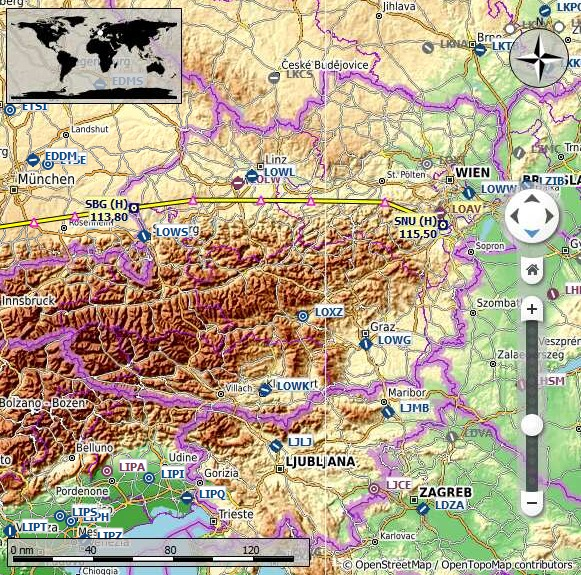
Bild oben: Sicht auf die östlichen Alpen mit dem OpenTopoMap Kartenthema. Nördlich der Alpen ist ein Flugplan zu sehen.
Eine Online-Rasterkarte und Geländekarte mit weltweit verfügbarer Bergschattierung und natürlichen Vegetationsfarben.
Die Karte wird von Stamen Design, unter der CC BY 3.0 Lizenz zur Verfügung gestellt. Die Daten stehen von der OpenStreetMap unter der ODbL zur Verfügung.

Bild oben: Das Stamen Terrain Kartenthema.
Eine politische Offline-Karte mit gefärbten Landesflächen. Grenzen und Wasserflächen werden nur grob dargestellt. Die Karte wird zusammen mit Little Navmap ausgeliefert und hat einen Option, um Stadt- und Ländernamen anzuzeigen.
Eine sehr einfache Offline-Karte. Grenzen und Wasserflächen werden nur grob dargestellt. Die Karte wird zusammen mit Little Navmap ausgeliefert und hat eine Option, um Stadt- und Ländernamen anzuzeigen.
Eine sehr einfache Offline-Karte, die auch Bergschattierung und Landfarben enthält. Grenzen und Wasserflächen werden nur grob dargestellt. Die Karte wird zusammen mit Little Navmap ausgeliefert und hat eine Option, um Stadt- und Ländernamen anzuzeigen.
Add-on Flugplätze werden unabhängig von den anderen Flugplatzeinstellungen (Hard oder Soft Runways) der Karte immer angezeigt, wenn diese Option ausgewählt ist. Dies erlaubt es nur, Add-on Flugplätze auf der Karte anzuschauen, wenn diese Option ausgewählt wird und alle anderen Flugplatzoptionen ausgeschaltet werden.
Zeige Flugplätze, die mindestens eine feste Landebahn haben.
Zeige Flugplätze, die nur weiche oder Wasserlandebahnen haben. Dieser Typ Flugplatz wird abhängig von der Zoomstufe nicht in der Karte angezeigt.
Zeige leere Flugplätze. Diese Schaltfläche bzw. dieser Menüpunkt kann abhängig von den Einstellungen im
Options Dialog auf dem Map Display Tab verborgen oder sichtbar sein. Die Funktion
dieses Menüpunktes wird zusammen mit den anderen Flugplatzeinstellungen kombiniert. Das heißt: Um leere
Fluglätze mit nur weichen Landebahnen zu sehen, müssen Flugplätze mit weichen Landebahnen und diese Option
eingeschaltet sein.
Ein leerer Flugplatz ist kein Add-On, hat keine Rollbahnen, keine Parkpositionen, keine Flugsteige und auch keine Vorfelder. Diese Flugplätze werden in Little Navmap anders behandelt, da sie die langweiligsten aller Standardflugplätze sind. Leere Flugplätze werden grau hinter allen anderen Flugplätzen auf der Karte gezeichnet.
Wasserflugplätze sind von dieser Definition ausgenommen, um ein unabsichtliches Verbergen zu vermeiden.
Zeigt oder verbirgt diese Anlagen auf der Karte. Navigationspunkte können abhängig von der Zoomstufe der Karte versteckt werden.
Zeigt oder verbirgt den Flugplan auf der Karte. Der Flugplan wird unabhängig von der Zoomstufe immer angezeigt.
Zeigt das Simulatorflugzeug, falls eine Verbindung besteht. Das Simulatorflugzeug wird unabhängig von der Zoomstufe immer angezeigt.
Das Verfolgen des Simulatorflugzeugs wird ausgeschaltet, wenn eine der folgenden Funktionen aufgerufen wird:
Show on map in einem Kontexmenü.
Goto Home oder Goto Center for Distance Search.
Map Links im Information Dock-Fenster.
Show Flight Plan. Entweder manuell im Menü oder nach dem Laden eines Flugplanes.
Dies erlaubt es, einen schnellen Blick auf einen Flugplatz oder Navigationspunkt während eines Fluges zu werfen.
Um zum Simulatorflugzeug zurückzukehren, Map Position Back auswählen und Show Aircraft
wieder aktivieren.
Zeigt die Spur des Simulatorflugzeuges. Die Spur wird unabhängig von der Zoomstufe immer angezeigt und beim Neustart des Programmes wieder geladen.
Die Spur wird beim Verbindungsaufbau zu einem Flugsimulator gelöscht. Manuelles Löschen ist möglich, indem
Main Menu -> Map -> Delete Aircraft Trail ausgewählt wird.
Die Größe der Spur ist aus Performancegründen limitiert. Punkte werden vom Start der Spur entfernt, wenn sie zu lang wird.
Zeigt ein Längen- und Breitengradgitter auf der Karte sowie den Nullmeridian und Antimeridian auf der Karte.
Zeigt Länder- und Stadtnamen sowie weitere interessante Punkte auf der Karte. Die Verfügbarkeit dieser Option hängt vom Kartenthema ab. Siehe auch Informationen zum Menüpunkt Theme.
Zeigt Bergschattierung auf der Karte. Die Verfügbarkeit dieser Option hängt vom Kartenthema ab. Siehe auch Informationen zum Menüpunkt Theme.
Für jeden gefunden Flugsimulator oder jede gefundene Simulatordatenbank wird hier ein Menüeintrag erzeugt. Diese Menüpunkte erlauben ein Umschalten zwischen den Simulatordatenbanken im laufenden Betrieb. Falls nur ein Flugsimulator gefunden wurde, werden keine Menüpunkte angezeigt.
Das Menü ist mit der Auswahl im Load Scenery Library Dialog synchronisiert. Wenn eine Szeneriebibliothek erfolgreich geladen wurde, werden die Karte, Suche und alle anderen Funktionen auf die neue Datenbank umgestellt.
Dies öffnet das Verzeichnis mit den Datenbankdateien von Little Navmap in einem Dateimanager (Windows Explorer, Apple Finder, etc.). Siehe Ohne Flugsimulatorinstallation laufen lassen für eine Anleitung, wie die Flugsimulatordatenbanken zwischen verschieden Rechnern kopiert werden können.
Öffnet den Load Scenery Library Dialog. Siehe Szenerie laden
Dialog für mehr Informationen. Dieser Menüpunkt ist deaktiviert, wenn keine Flugsimulatorinstallationen
gefunden wurden.
Öffnet den Connect Dialog, der es erlaubt, sich mittels Little Navconnect mit einem Flugsimulator
zu verbinden. Siehe auch Mit dem Flugsimulator verbinden für mehr Information.
Dies erlaubt wieder alle Dialoge, die mittels Do not show this dialog again ausgeschaltet wurden.
Öffnet den Einstellungsdialog.
Öffnet oder schließt diese Dock-Fenster.
Werkzeug- und Statusleiste verstecken oder anzeigen.
Zeigt diese Hilfe im Web-Browser.
Zeigt die Kartenlegende im Information Dock-Fenster. Die Legende steht auch hier zum Anzeigen im
Web-Browser zur Verfügung: Little Navmap Legend
Zeigt die Versions- und Revisionsnummern für Little Navmap. Enthält auch Verknüpfungen zum Datenbankverzeichnis, der Konfigurationsdatei, der Logdatei und den E-Mail Adressen des Autors.
Informationen über das Marble widget, das zum Herunterladen und Anzeigen der Karten benutzt wird.
Information über den Qt application framework, der von Little Navmap benutzt wird.
Die Statusleiste zeigt folgendes an (von links nach rechts):
More Details oder Less Details eingestellt.
Done.:Alle Bilderkacheln
wurden für den angezeigten Kartenausschnitt erfolgreich heruntergeladen.
Waiting for Data
...:Bilderkacheln fehlen in Zwischenspeicher und wurden beim Server angefordert. Nun wird auf
die Antwtort gewartet.
Waiting for Update ...:
Kartendaten wurden schon geladen, sind aber nach zwei Wochen abgelaufen. Es wird versucht aktualisierte
Bilderkacheln herunterzuladen und nun wird auf eine Antwort gewartet.
Incomplete.:Das
Herunterladen ist fehlgeschlagen.
Waiting for Data ... if
no hill shading is available for a OpenStreetMap region.
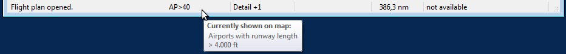
Bild oben: Statusleiste mit einer Nachricht über die letzte
Aktion Flight plan opened. auf der linken Seite und einer Kurzhilfe, die anzeigt, was momentan auf
der Karte dargestellt wird. Die Karte zeigt nur Flugplätze, die eine Landebahn von mindestens 4000 Fuß Länge
haben. Navigationspunkte werden nicht angezeigt. Die Detailstufe der Karte wurde um eins erhöht und die
Koordinaten an der Mauszeigeposition werden nicht angezeigt, da sich der Zeiger nicht über der Karte befindet
(not available). Der Fortschrittsindikator für das Herunterladen von Karten ist leer.
Zum Bewegen der Karte einfach klicken und schieben. Das Mausrad kann zum Herein- und Herauszoomen benutzt werden. Die Schaltflächen auf der Karte können ebenso zum Zoomen und Bewegen benutzt werden.
Alternative können die Cursor-Tasten zum Bewegen und die Tasten + und - zum Zoomen
benutzt werden. Dabei nicht vergessen, die Karte vorher durch Anklicken zu aktivieren.
Ein einfacher Klick auf einen Flugplatz, Navigationspunkt oder eine Luftstraße zeigt Details über das Objekt im
Information Dock-Fenster.
Ein Doppelklick zoomt zu dem angeklickten Objekt hinein und zeigt gleichzeitig Details im
Information Dock-Fenster.
Die Klick Funktionalität funktioniert nicht für Wegpunkte oder Flugplätze, die Bestandteil von Flugplänen sind,
wenn der Modus Flugplanbearbeitung auf der Karte aktiviert ist. Der Bearbeitungmodus kann über die Werkzeugleiste
oder in Main Menu -> Flight Plan -> Edit Flight Plan on Map
abgestellt werden.
Die Empfindlichkeit für Mausklicks kann im Options Dialog auf dem Map Display Tab
eingestellt werden.
Für viele Kartenobjekte, wie Flugplätze, Wegpunkte, Funkfeuer, Luftstraßen, Parkpositionen, Tankpositionen und
den Tower wird eine Kurzhilfe angezeigt, wenn man mit dem Mauszeiger darüber fährt. Die Kurzhilfe wird in ihrer
Größe begrenzt, wenn sie zu lang wird. In diesem Fall wird mit More... am Ende des Textes darauf
hingewiesen.
Die Empfindlichkeit für Kurzhilfen kann im Options Dialog auf dem Map Display Tab
eingestellt werden.
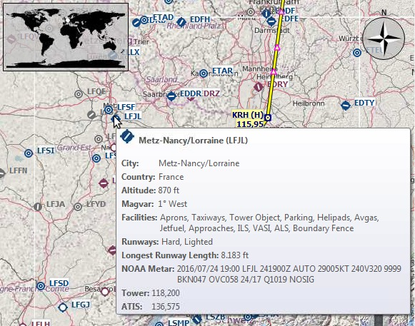
Bild oben: Kurzhilfe mit Informationen über einen französischen Flugplatz.
Flugplätze oder Navigationspunkte, die in der Flugplantabelle oder in der Ergebnistabelle der Suche selektiert sind, werden in der Karte entsprechend mit einem grün-schwarzen oder einem gelb-schwarzen Ring markiert.
Diese Hervorhebungen stellen sämtliche Funktionalität von sichtbaren Kartenobjekten zur Verfügung, auch wenn die hervorgehobenen Objekte nicht auf der Karte sichtbar sind (Markierungsring ist leer). Das beinhaltet den Doppelklick zum Heranzoomen, den Einfachklick zur Anzeige von Informationen und alle Menüeinträge im Kontextmenü.
Wenn man nahe genug an einen Flugplatz heranzoomt, ändert sich das Flugplatzsymbol in ein komplettes Flugplatzdiagramm, welcher Rollbahnen, Landebahnen, Parkpositionen, Flugsteige und mehr anzeigt.
Das Flugplatzdiagramm stellt auch zusätzliche Informationen mit Kurzhilfen für Park- und Tower-Positionen an. Ein Rechtsklick auf eine Parkposition erlaubt es, die Startposition in einem Flugplan festzulegen.
Siehe auch Nav Map Legend.

Bild oben: Flugplatzdiagramm vom Hamburg (EDDH).

Bild oben: Detaillierte Ansicht des Flugplatzdiagrammes. Es zeigt blaue Flugsteige (Gates) an der rechten Seite und grüne Parkpositionen der allgemeinen Luftfahrt links unten. Die lange versetzte Anflugschwelle der Landebahn 33 ist sichtbar.
Das Kontextmenü der Karte kann mittels Rechtsklick oder der Menütaste aufgerufen werden.
Zeigt detaillierte Information im Information Dock-Fenster für den Flugplatz, die
Navigationspunkte oder Luftstraßen, die den Mauszeiger am nächsten sind.
Siehe auch Informationsfenster.
Startet eine Entfernungsmessung mit dem ersten Klick. Der zweite Klick beendet das Messen und behält die Linie auf der Karte. Alle Entfernungsmessungen werden gespeichert und beim Neustart wieder geladen.
Während des Ziehens der Messlinie kann die Tastatur, das Mausrad oder die Karten-Overlay-Schaltfächen benutzt werden, um die Karte zu bewegen.
Ein Rechtsklick, das Drücken der Esc-Taste oder ein Klick außerhalb des Kartenfensters bricht das Ziehen der Messlinie ab.
Entfernungsmessungen benutzen nautische Meilen als Einheit. Wenn die Linien kurz genug sind, wird Fuß als Einheit hinzugefügt, um z.B. die Startdistanz bei einem verkürzten Start oder andere Entfernungen innerhalb eines Flugplatzes zu messen.
Eine Großkreisroute (Great Circle) gibt die kürzeste Distanz zwischen zwei Punkten auf der Erde, benutzt aber keinen konstanten Kurs. Daher zeigt diese Entfernungsmessung den Start- und Endkurs an.
Der Kurs wird Grad als wahrer Kurs angezeigt. Zusätzliche Informationen, wie die Kennung oder die Funkfrequenz werden angezeigt, falls die Entfernungsmessung an einem Navigationspunkt oder einem Flugplatz startet.
Siehe auch Nav Map Legend.
Eine Rhumb-Linie oder auch Loxodrome ist eine Linie von konstantem Kurs und wird benutzt, wenn zwischen Wegpunkten einer Luftstraße navigiert wird oder wenn man an ein Funkfeuer heranfliegt. Die Distanz zwischen zwei Punkten ist größer als bei einer Großkreisroute.
Der Kurs der Messlinie wird normalerweise als wahrer Kurs in Grad angezeigt. Wenn die Messlinie an einem Flugplatz oder Navigationspunkt startet, die eine magnetische Variation haben, wird ein magnetischer Kurs angezeigt. In diesem Fall werden zusätzliche Informationen, wie Kennung oder Funkfrequenz, an der Linie angezeigt.
Dieser Menüpunkt ist aktiv, wenn auf das Ende einer Messlinie geklickt wird (das kleine Kreuz). Nur die ausgewählte Linie wird entfernt.
Zeigt mehrere Entfernungsringe um die angeklickte Position. Die Anzahl und Entfernung der Ringe kann im
Options Dialog auf dem Map Display Tab eingestellt werden. Die Entfernung des Ringes
wird als Text am Ring angezeigt. Entfernungsringe werden gespeichert und beim Neustart des Programmes neu
geladen.
Zeigt einen Entfernungsring um das angeklickte Funkfeuer (VOR- oder NDB-Station). Ein Text zeigt die Kennung und die Funkfrequenz. Die Farbe des Ringes zeigt den Typ des Navigationspunktes. Die Entfernungsringe werden gespeichert und beim Neustart des Programmes neu geladen.
Dieser Menüpunkt ist nur aktiv, wenn auf das Zentrum der Entfernungsringe geklickt wird (kleiner Kreis). Entfernt den Ring bzw. die Ringe von der Karte.
Löscht alle Entfernungsringe und Distanzmesslinien von der Karte.
Dieser Menüpunkt erlaubt das Setzen der Startposition für einen Flugplan und ist aktiv, wenn der Rechtsklick über einen Flugplatz, einer Park- oder Tankposition erfolgt. Diese Funktion ersetzt den aktuellen Start im Flugplan oder fügt einen neuen hinzu, wenn der Flugplan leer ist.
Eine Startposition auf der längsten Landebahn wird hinzugefügt, wenn das angeklickte Objekt ein Flugplatz ist. Der Flugplatz und die Startposition ersetzen die aktuellen Positionen im Flugplan, wenn auf eine Parkposition in einem Flughafendiagramm geklickt wurde.
Dieser Menüpunkt ist aktiv, wenn auf einen Flugplatz geklickt wurde und ersetzt das aktuelle Ziel im Flugplan oder fügt ein neues hinzu, wenn der Flugplan leer ist.
Fügt das angeklickte Objekt in den nächsten Flugplanabschnitt ein. Das Objekt wird vor dem Start oder nach dem Ziel eingefügt, wenn die angeklickte Position in der Nähe der Flugplanenden ist.
Der Name des Navigationspunktes oder Flugplatzes wird im Menüpunkt angezeigt.
Wenn kein Kartenobjekt in der Nähe der angeklickten Position ist, wird eine benutzerdefinierte Position zum Flugplan hinzugefügt.
Löscht das angeklickte Objekt von Flugplan.
Zeigt das angeklickte Objekt im Suchdialog. Die aktuellen Suchparameter werden dabei zurückgesetzt.
Setzt das Zentrum für die Distanzsuche. Siehe Distanzsuche. Das Zentrum für die Distanzsuche wird mit einen Symbol hervorgehoben.
Legt den Home-Bereich fest. Das Zentrum des Home-Bereiches wird mit einem  Symbol angezeigt.
Symbol angezeigt.
Der Flugplanbearbeitungsmodus ist standardmäßig aktiviert und kann auf der Werkzeugleiste oder in Main
Menu -> Flight Plan -> Edit Flight Plan on Map ausgeschaltet werden.
Während des Bearbeitens kann die Tastatur, das Mausrad oder die Karten-Overlay-Schaltfächen benutzt werden, um die Karte zu bewegen.
Der Flugplanbearbeitungsmodus ist dafür konzipiert, dass eine direkte Verbindung zwischen Start und Ziel schon existiert.
Vor dem Bearbeiten des Planes sollten immer Start und Ziel zuerst festgelegt werden, wenn ein manuelles Erstellen des Flugplanes gewünscht ist. Basierend auf der Direktverbindung können dann Navigationspunkte hinzugefügt werden.
Die folgende Funktionalität ist verfügbar:
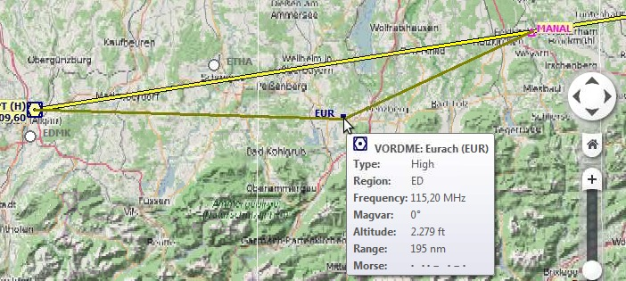
Bild oben: Einfügen des VOR EUR in das Fluglansegment indem auf das Flugplansegment geklickt wird. Eine Kurzhilfe wird für das Funkfeuer angezeigt.

Bild oben: Das VOR TRA im Flugplan wird durch ein anderes ersetzt indem der Wegpunkt TRA auf KLO gezogen wird. Ein Menü erscheint um das gewünschte Objekt auszuwählen.
Zwei Such-Tabs sind verfügbar für die Suche nach Flugplätzen und Navigationspunktend (Funkfeuer und Wegpunkte).
Diese Tabs enthalten mehrere Reihen von Suchfiltern, die mit dem Menü auf der Hamburger-Schaltfläche oben rechts verborgen werden können.
In dem Menü wird einer Suchzeile ein * vorangestellt, um zu zeigen, dass der betroffene Filter eine
Änderung enthält. Dies kann benutzt werden, um herauszufinden, warum eine Suche keine oder unerwartete Ergebnisse
erbringt.
Die Suchfilter werden durch verschieden Kontrollelemnte definiert, die selbst erklärend sind. Nur die Textfilter
und die sogennanten Tri-State-Schaltflächen, wie Lighted, Approach oder
Closed benötigen nähere Erläuterungen weiter unten.
Alle Filter könne zusammen benutzt werden, wobei sämtliche Bedingungen für ein Objekt erfüllt sein müssen, um im
Ergebnis angezeigt zu werden (und Operator). Alle Filter werden sofort ausgeührt, außer der
Distanzsuche, die nach jeder Änderung erst nach einer kurzen Verzögerung ausgeführt wird.
Ein Kurzhilfe auf dem blauen Fragezeichen-Etikett oben rechts gibt Hinweise zu Suche.
Die Standardsuche für Texte findet alle Name, die mit dem eingegeben Text beginnen.
Der Platzhalter * steht für beliebigen Text. Wenn ein * im Suchbegriff entalten ist,
wird die Standardsuche nicht länger benutzt. In dem Fall kann es nötig sein, ein * am Ende des
Suchbegriffes einzufügen um das erwartete Ergebnis zu erhalten.
Die Suche wird negiert (d.h. finde alle Text die nicht passen), wenn das erste Zeichen im Text ein -
ist.
Obiges gilt nicht für numerische Felder, wie Runways: Min oder Altitude: Max.
Diese werden benutzt, um Flugplätze anhand des Vorhandenseins bestimmter Einrichtung oder Attribute zu filtern.
Die Farbe und das Aussehen dieser Tri-State Schaltflächen variiert je nach Betriebssystem. Anstatt z.B. Grau
können andere Farben oder Symbole benutzt werden (rot gefüllt auf Linux oder ein - auf macOS).
Diese Funktion erlaubt es alle Suchkriterien mit einer einfachen räumlichen Suche zu kombinieren.
Die Schaltfläche Distance muss ausgewählt sein, um diese Suchfunktion einzuschalten. Das Ergebnis
wird nur Flugplätze oder Navigationspunkte enthalten, die in die minimale und maximale Entferung vom Suchzentrum
fallen. Das erlaubt die schnelle Suche nach einem Ziel, das innerhalb der Reichweite des gewählten Flugzeuges
befindet und gleichzeitig andere Kriterien, wie z.B. beleuchtete Landebahnen oder Treibstoff erfüllt.
Das Zentum für die Distanzsuche wird duch ein Symbol angezeigt.
Für weitere Einschränkungen kann die Richtung auf Norden, Osten, Westen und Süden limitiert werden.
Das Hamburger-Menü sollte auf das * Symbol überprüft werden, um herauszufinden,
ob andere Suchkriterien die Suche beeinflussen, falls nicht das erwünschte Ergebnis erscheint.

Bild oben (anklicken für große Ansicht): Ein komplexe Suche, die alle Flugplätze mit einer Entfernung zwischen 200 und 400 Nautischen Meilen von Frankfurt (EDDF) findet. Die Flugplätze sollten eine Wertung größer als Null haben und mindestens eine beleuchtete Landebahn haben. Militärische und geschlossene Flugplätze sind ausgeschlossen. Die Flugplätze sind auf der Karte hervorgehoben, indem alle Einträge im Suchergebnis selektiert wurden.
Alle selektierten Elemente im Suchergebnis werden auf der Karte mit gelb-schwarzen Kreisen hervorgehoben. Siehe
Hervorhebungen für mehr Informationen. Mehrfachselektion mittlels
Umschalt-Click oder Strg-Click sind möglich.
Die Titelzeile aller Tabellenansichten erlaubt folgenden Manipulationen:
Die Manipulationsmöglichkeiten oben stehen für alle Tabellenansichten im Programm zur Verfügung.
Das Programm speichert die Sortierreihenfolge, die Spaltenbreiten und -positionen und stellt sie bei einen
Neustart wieder her. Der Menüpunkt Reset View stellt die Standardeinstellungen wieder her.
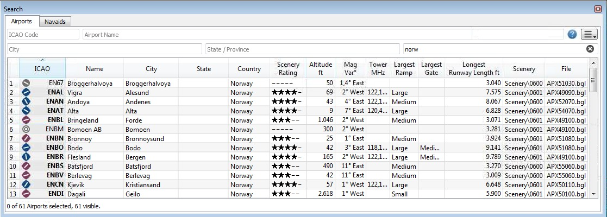
Bild oben: Suchergebnisse für eine Flugplatzsuche. Alle zusätzlichen Suchoptionen wurden verborgen.

Bild oben: Eine Suche nach Funkfeuern. Alle Suchoptionen sind
sichtbar. Das Suchergebnis is limitier auf die Region LI (Italien) und VOR- und
NDB-Funkfeuer.
Ein Dopplelklick auf einen Eintrag in den Suchergebnissen zeigt entweder das Flugplatzdiagramm oder den
entsprechenden Navigationspunkt. Zusätzlich werden Details im Information Dock-Fenster angezeigt.
Einfache Klicks selektieren das Objekt und heben es auf der Karte mit einem gelb-schwarzen Kreis hervor.
Gleiche Funktion wie im Kontexmenü der Karte.
Zeigt entweder das Flugplatzdiagramm oder den Navigationspunkt
Nimmt den Text unter dem Mauszeigen und setzt ihn als Suchkriterium in den entsprechenden Filter für die Spalte. Der Menüpunkt is nur für Textspalten aktiviert.
Löscht alle Suchfilter.
Die Tabelleansicht zeigt aus Performancegründen initial nicht alle Einträge an. Dieser Menüpunkt erlaubt es, sämtliche Ergebnisse in die Tabelle zu laden. Die Tabellenansicht springt wieder zur limitierten Ansicht, wenn Suchkriterien oder die Sortierung geändert werden. Die Anzahl der angezeigten, die Gesamtanzahl und die Anzahl der selektierten Einträge wird im unteren Teil des Such-Tabs angezeigt.
Die Anzeige einer großen Menge Suchergebnisse und insbesondere das Hervorheben auf der Karte kann einige Zeit in Anspruch nehmen. Das Programm stürzt nicht ab, braucht aber ein paar Sekunden um alle Einträge auf der Karte hervorzuheben.
Gleiche Funktion wie im Kontexmenü der Karte.
Kopiert die selektierten Einträge im CSV-Format in die Zwischenablage. Dies beinhaltet alle Änderungen in der Tabellenansicht, wie die Spaltenreihenfolge und Sortierreihenfolge. Das kopierte CVS enthält eine Kopfzeile.
Wählt alle sichbaren Einträge aus. Um alle verfügbaren
Einträge auszuwählen muss die Funktion Show All erst benutzt werden.
Setzt die Sortierreihenfolge, die Spaltenreihenfolge und die Spaltenbreiten zurück auf den Standardwert.
Gleiche Funktion wie im Kontexmenü der Karte.
Der obere Teil zeigt Start, Startposition (Parkposition, Landebahn oder Helikopterlandeplatz), Ziel, Flugplandistanz, Reisezeit und den Typ des Flugplanes.
Abgesehen davon stehen drei weiter Eingabefelder zur Verfügung:
Leg Time (Flugzeit für den Abschnitt) und
ETA (geschätzte Ankunftszeit am Wegpunkt basierend auf der Startzeit 0:00). Der Wert des Feldes
wird nicht im Flugplan gespeichert und wird nicht für Berechnungen zum Simulatorflugzeug benutzt.
Die Tabelle erlaubt die gleichen Manipulationen, wie die Tabelle der Suchergebnisse mit Ausnahme der Sortierung. Siehe hier für mehr Informationen.
Alle in der Flugplantabelle selektierten Elemente werden auf der Karte mit einem grün-schwarzen Kreis
hervorgehoben. Siehe auch Hervorhebungen. Mehrfachselektion mittlels
Umschalt-Click oder Strg-Click sind möglich.
Anmerkungen zu den Spalten Course °M und Direct °M:
Direct °M: Dies ist der konstante Kurs der Rhumb-Linie die zwei Wegpunkte verbindet. Abhängig von
der Route und Entfernung kann diese sich vom Kurs der Großkreis-Route unterscheiden. Dieser Kurs sollte benutzt
werden wenn ein Flugplan Luftstraßen folgt oder Funkfeuer zum Navigieren benutzt. Im Gegensatz zum Kurs, den
das GPS im Flugsimulator anzeigt, ergibt dieser Kurs das genaue Radial, wenn ein NDB- oder VOR-Funkfeuer
angesteuert wird.
Course °M: Dies ist der Startkurs der Großkreis-Route, die zwei Wegpunkte eines Flugplansegmentes
verbindet. Dieser Kurs sollte benutzt werden, wenn die Flugplan entlang langer Segmente ohne Navigationspunkte
enthält. Dazu muß der Kurs beim Fliegen regelmäßig geändert werden.
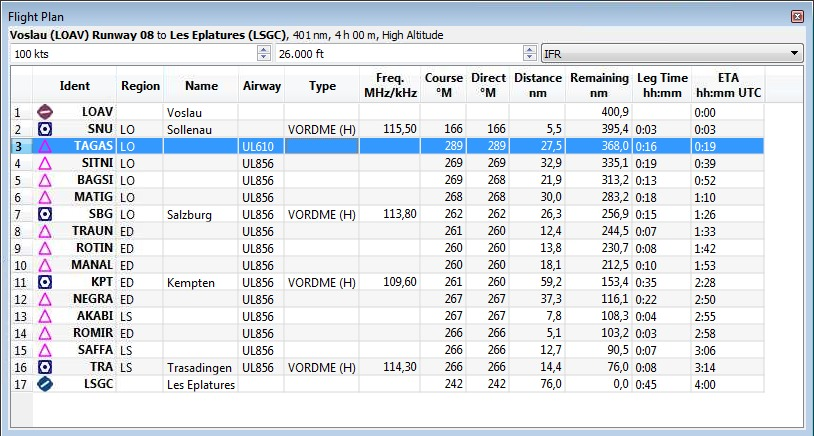
Bild oben: Das Flight Plan Dock-Fenster.
Ein Doppelklick zoomt zu dem angeklickten Objekt hinein und zeigt gleichzeitig Details im
Information Dock-Fenster. Ein einfacher Mausklick selektiert das Object und hebt es auf der Karte
mit einem grün-schwarzen Kreis hervor.
Verschiebt alle Flugplansegmente in der Liste hoch oder herunter. Das funktioniert auch, wenn mehrere Einträge selektiert sind.
Die Namen von Luftstraßen werden entfernt, wenn Wegpunkte in Flugplan verschoben oder entfernt werden, da die neuen Flugplansegmente keine Luftstraßen benutzen, sondern direkte Verbindungen sind.
Löscht alle markierten Flugplansegmente (auch Start und Ziel, wenn markiert). Die Änderungen können mit
Undo rückgängig gemacht werden, falls Segmente ungewollt gelöscht wurden.
Gleiche Funktion wie im Kontexmenü der Karte.
Zeigt entweder das Flugplatzdiagramm oder springt zum Navigationspunkt auf der Karte.
Gleiche Funktion wie im Kontexmenü der Karte.
Zeigt die Entfernungsringe für alle selektierten Funkfeuer auf der Karte. Für jedes ausgewählte Funkfeuer wird ein Entfernungsring gezeichnet.
Sonst die gleiche Funktion wie im Kontexmenü der Karte.
Gleiche Funktion wie im Kontexmenü der Karte.
Kopiert die selektierten Einträge im CSV-Format in die Zwischenablage. Dies beinhaltet alle Änderungen in der Tabellenansicht, wie die Spaltenreihenfolge. Das kopierte CVS enthält eine Kopfzeile.
Selektiert alle Flugplansegment.
Setzt die Spaltenreihenfolge und die Spaltenbreiten zurück auf den Standardwert.
Same as the Map Context Menu.
Dieses Dock-Fenster enthält in mehreren Tabs Informationen zu Flugplätzen. Ein weiterer Tab zeigt Details zu mehreren Navigationspunkten oder Luftstraßen. Weiterhin ist die Legende für die Navigationskarte und eine allgemeine Legende für das jeweilige Kartenthema enthalten.
Sämtliche Informationen können als formatierter Text in die Zwischenablage kopiert werden. Dazu kann das
Kontextmenü oder die Tastenkombinationen Strg-A um alles auszuwählen und Strg-C um die
Auswahl in die Zwischenablage zu kopieren, benutzt werden.
Beim Anzeigen der Informationen wird der Flugplatz-Tab bevorzugt. Wenn man also auf einen Flugplatz und z.B. ein
VOR-Funkfeuer klickt, wird der Flugplatz-Tab nach vorne geholt. Der Tab Navaid wird trotzdem
gleichzeitig mit Informationen zum VOR gefüllt.
Ein Verweis Map erlaubt es, das Objekt auf der Karte anzuzeigen.

Bild oben: Flugplatzinformationen. Zusätzliche Tabs zeigen
Informationen zu Landebahnen Runways, Funkfrequnzen Com und Anflugprozeduren
Approaches.
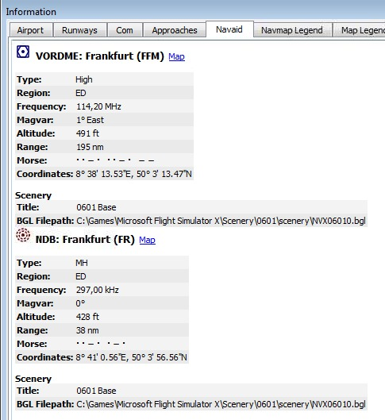
Bild oben: Information zu Navigationspunkten. Zwei Funkfeuer waren nahe der Klickposition.
Diese Dock-Fenster zeigt Informationen über das Simulatorflugzeug ähnlich eines Flight Management Systems an. Little Navmap muß mit dem Flugsimulator verbunden sein, um diese Funktionalität zu ermöglichen. Ein Tab des Fensters zeigt allgemeine Flugzeugdaten, wie Gesamtgewicht, und ein weiterer Tab zeigt Flugdaten, Fortschritt im Flugplan, Wetter und Umgebungsparameter.
Siehe auch Mit dem Flugsimulator verbinden.

Bild oben: Fenster Simulatorflugzeug mit Verbindung zum Flugsimulator.
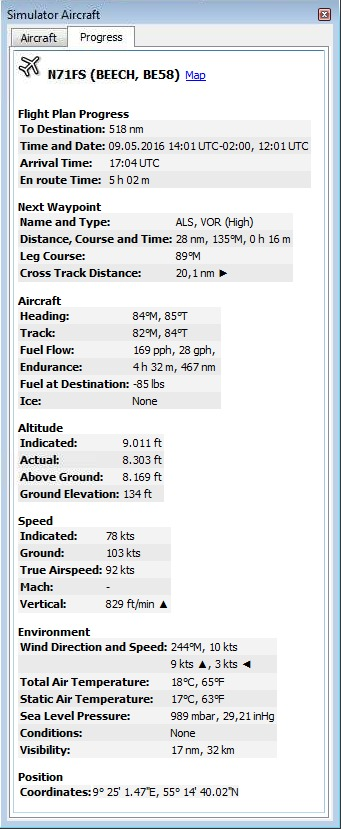
Bild oben: Fortschritts- und Umgebungsinformationen der aktuellen
Flugsituation. Einige Felder, wie Next Waypoint sind nur verfügbar, wenn ein Flugplan geladen
wurde.
Diese Dock-Fenster zeigt die Bodenhöhe und Reiseflughöhe zusammen mit allen Wegpunkten des Flugplanes. Es ist nur verfügbar, wenn ein Flugplan geladen wurde. Wenn Little Navmap mit dem Flugsimulator verbunden ist, wird auch das Simulatorflugzeug angezeigt.
Die Verarbeitung der Höhendaten findet im Hintergrund statt, da diese heruntergeladen werden müssen und die Berechnung CPU intensiv ist. Daher kann die Aktualisiertung der Anzeige ein paar Sekunden bis zu einer halben Minute dauern. Die Hintergrundverarbeitung startet nach dem Erzeugen oder Ändern eines Flugplanes oder wenn neue Daten heruntergeladen wurden. Die Anzeige wird aktualisiert, sobald neue Höhendaten verfügbar sind.
Falls die Hintergrundverarbeitung Probleme oder Stottern im Flugsimulator verursacht, kann das Fenster
Flight Plan Elevation Profile geschlossen werden. Alle Hintergrundprozesse werden in diesem Fall
abgebrochen.
Das Höhenprofil deckt nur den Flugplan ab und wird die Darstellung nicht ändern, wenn das Simulatorflugzeug sich vom Flugplan entfernt. Steig und Sinkflug wird in der Flugplandarstellung ebenfalls nicht berücksichtigt, da noch keine Leistungsprofile für Flugzeuge zur Verfügung stehen. Der Flugplan wird nur in der Reiseflughöhe dargestellt. Die Flugzeugspur jedoch zeigt Steig- und Sinkflüge an.
Die verwendenten Höhendaten stehen nicht weltweit zu Verfügung, schließen manche Länder, wie z.B. Neuseeland aus und enden bei 60° nördlicher Breite.
Zusätzliche Information werden im oberen Teil des Fensters angezeigt, wenn der Mauszeiger über das Diagramm bewegt wird. Die enstprechende Position wird auf der Karte ebenfalls hervorgehoben.
Folgendes wird angezeigt, wenn der Mauszeiger über das Diagramm bewegt wird:
Für mehr informationen siehe auch im Navmap Legend Tab im Information Dock-Fenster oder
der Little Navmap Legend.

Bild oben: Höhenprofile des FLugplanes mit einer vertikalen Linie, die die Mauspoition anzeigt.
Little Navmap kann METARs aus vier verschiedenen Quellen anzeigen:
Im Options Dialog auf dem Weather Tab kann eingestellt werden, welche Quellen benutzt
werden sollen um METARs in der Kurzhilfe der Karte oder im Information Dock-Fenster darzustellen.
Beide Active Sky Programme werden automatisch für jeden Simulator erkannt. Die Datei
current_wx_snapshot.txt wird geladen und auf Änderungen überwacht.
Die Datei current_wx_snapshot.txt kann auch manuell ausgewählt werden. In dem Fall werden die METARs
aus der Datei for alle installierten Simulatoren angezeigt.
Die meisten Einstellungen im Dialog Options sind selbst erklärend und durch Kurzhilfen (Tooltips)
ergänzt. Auf eine detaillierte Beschreibung wird daher hier verzichtet.
Die Schaltfläche Restore Defaults setzt nur die Einstellungen des Dialoges zurück. Andere, wie z.B.
die Einstellungen zur Kartenanzeige sind davon nicht betroffen. Siehe unter Problemlösung wie alle Einstellungen im Falle von Fehlern komplett zurückgesetzt werden
können.
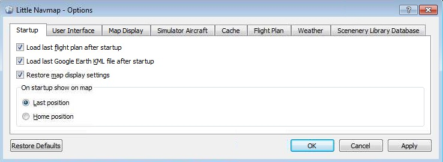
Bild oben: Der Startup Tab des Dialog
Options.
Dieser Dialog erlaubt es, die Daten aus der Szeneriebibliothek eines Flugsimulators in die interne Datenbank von
Little Navmap zu laden. Die zu ladende Szeneriebibliothek kann in dem Eingabefeld
Simulator: ausgewählt werden.
Der Dialog zeigt Informationen über die momentan ausgewählte Szeneriedatenbank, wie die Anzahl der geladenen Flugplätze, die Datenbankversion und mehr an.
Der Pfad zum Flugsimulator und der scenery.cfg Datei werden in zwei Textfeldern für den momentan
ausgewählten Simulator angezeigt. Die Pfade werden automatisch ermittelt, können aber vom Benutzer geändert
werden. Alle Einstellungen werden für jeden Flugsimulator gespeichert.
Das Laden einer Szeneriebibliothek kann, je nach Rechener und der Menge der installierten Add-ons zwischen drei
und sechs Minuten dauern. Das Laden kann beschleunigt werden, indem Verzeichnisse ohne Navigationsdaten im
Options Dialog im Scenery Library Database Tab ausgeschlossen werden, indem man sie in
der oberen Liste einträgt.
Das Programm stellt die alte Szeneriedatenbank wieder her, falls der Ladeprozess mit einem Fehler abbricht oder durch den Benutzer abgebrochen wird.
Alle Flugplätze, die nicht im Verzeichnis Scenery im Basisverzeichnis gefunden wurden, werden als
Add-On markiert und auf der Karte entsprechend hervorgehoben. Verzeichnisse können von diesen Verhalten
ausgeschlossen werden, indem man sie im Options Dialog auf dem Scenery Library Database
Tab in der unteren Liste einträgt. Das kann hilfreich sein, wenn Add-Ons z.B. lediglich die Flugplatzhöhe
korrigieren und die entsprechenden Plätze nicht auf der Karte in kursiv und unterstrichen hervorgehoben werden
sollen.
Das Menü Scenery Library -> Flight Simulators wird mit den ausgewählten Simulator im
Dialog synchronisiert. Wenn eine Szeneriebibliothek erfolgreich geladen wurde, wird die Karte, Suche und alle
anderen Funktionen auf die neue Datenbank umgestellt.
Das Programm versucht die Flugsimulator Basispfade und die Pfade zu den jeweiligen
Scenery.cfg-Dateien automatisch zu ermitteln. Die typischen Pfade für die jeweiligen Simulatoren zur
Scenery.cfg-Datei unter Windows 7/8/10 sind:
C:\ProgramData\Microsoft\FSX\Scenery.cfg
C:\ProgramData\Microsoft\FSX-SE\Scenery.cfg
C:\Users\YOUR_ACCOUNT_NAME\AppData\Roaming\Lockheed Martin\Prepar3D v2\Scenery.cfg
C:\ProgramData\Lockheed
Martin\Prepar3D v3\Scenery.cfg
Ein Fehlerdialog wird am Ende des Ladevorganges angezeigt, falls beim Laden der Szeneriebibliothek ein Fehler aufgetreten ist und eine BGL-Datei nicht gelesen werden konnte. In dem Fall sollte die Szeneriedarstellung in Little Navmap überprüft werden, ob alle Add-On Flugplätze erscheinen.

Bild oben: Der Ladedialog für die Szeneriedatenbank. FSX ist ausgewählt und die Datenbank ist noch leer.

Bild oben: Ladefortschritt während des Lesens der Szeneriebibliothek aus dem Simulator in Little Navmaps interne Datenbank.
Die Anzahl der Flugplätze, Navigationspunkte und anderer Objekte, die im Load Scenery Library Dialog
angezeigt werden, kann sich von der Anzahl Objekte im Fortschrittsdialog unterscheiden. Das rührt daher, dass
Add-On Flugplätze die Originalflugplätze ersetzen und im Fortschrittsdialog all gelesenen Flugplätze aufgelistet
werden, währed im Load Scenery Library Dialog nur das Endergebnis angezeigt wird. Ebenso werden nach
dem Laden Duplikate von Navigationspunkten gelöscht.
Diese Schritte beschreiben die Vorgehensweise, mit der man Little Navmap auf einen Rechner ohne Flugsimulatorinstallation laufen lassen kann. Abgesehen von Laden der Szeneriebibliothek steht sämtliche Funktionalität aus in dieser Konfiguration zur Verfügung.
Die gleiche Prozedur wird auch verwendet, wenn Little Navmap unter Linux oder macOS benutzt werden soll.
Typischerweise wird dieser Szenario benutzt um sich über ein Netzwerk mit dem Flugsimulator zu verbinden und den Fortschritt des Fluges zu beobachten. Flugpläne können weiterhin erstellt, geladen und gespeichert werden. Es muß lediglich sichergestellt werden, dass die Flugpläne über Windows Dateifreigaben oder andere Methoden zum Rechner mit dem Flugsimulator kopiert werden.
Zwei Rechner werden in dem Szenario benutzt: Der Flugrechner auf dem der Simulator installiert ist und der entfernte Netzwerkrechner auf dem lediglich Little Navmap läuft.
Main Menu -> Scenery Library ->
Show Database Files auf dem Flugrechner anklicken. Dies öffnet das Verzeichnis mit den
Szeneriedatenbanken in einen Dateimanager (z.B. Windows Explorer oder Apple Finder). Dort können eine oder
mehrere Datenbanken, wie little_navmap_fsx.sqlite oder little_navmap_p3dv3.sqlite
gespeichert sein.
Scenery Library -> Show
Database Files auswählen.
Scenery
Library einen Eintrag für jede kopierte Datenbank enthalten oder keinen Eintrag, wenn nur eine Datenbank
kopiert wurde. Auf jeden Fall sollten Flugplatzsymbole auf der Karte sichtbar sein.
Siehe nächstes Kapitel für Informationen zum Verbindungsaufbau zum Flugsimulator.
Daten zum Simulatorflugzeug werden zu Little Navmap mittels Little Navconnect auf dem Flugrechner übertragen. Dies erspart die fehleranfällige Einrichtung einer SimConnect-Verbindung über ein Netzwerk.
Die Einrichtungsprozedur ist die gleiche für entfernte Netzwerkverbindungen, wie auch für lokale Verbindungen. In letzteren Fall laufen alle Programme (Simulator, Little Navmap und Little Navconnect) auf dem gleichen Rechner.
Little Navmap kann sich nicht direkt mit dem Flugsimulator verbinden. Little Navconnect ist auf jedem Fall notwendig, auch wenn alle Programme auf dem gleichen Rechner laufen.
localhost and 127.0.0.1 wird benutzt, wenn keine Verbindung zu einem Netzwerk
besteht.

Bild oben: Little Navconnect wurde gestartet und wartet auf einen Flugsimulator.
Der Port muß in Little Navconnect s Options Dialog geändert werden,
wenn eine Fehlermeldung, wie unten erscheint:
[2016-07-27 16:45:35] Unable to start the server: The bound address is already in use.
Main Menu -> Tools ->
Flight Simulator Connection öffnen.
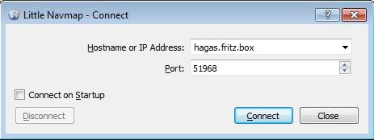
Bild oben: Dialog mit den korrekten Werten, um mit der oben gezeigten Little Navconnect Instanz Verbindung aufzunehmen.
localhost benutzen.
51968 ist der Standardwert und muß üblicherweise nicht geändert
werden.
Connect auswählen, um Verbindung aufzunehmen. Der Dialog wird nun geschlossen und
Little Navmap versucht im Hintergrund eine Verbindung aufzunehmen. Dies kann, abhängig von der
Netzwerkkonfiguration, eine Weile dauern. Das Simulatorflugzeug wird auf der Karte und im Simulator
Aircraft Dock-Fenster angezeigt, sobald ein Flug eingerichtet und geladen wurde.
Connected. Waiting for update. im
Simulator Aircraft Dock-Fenster angezeigt. Dies z.B. kann der Fall sein, wenn der Simulator sich
noch im Eröffnungsbildschirm befindet.
Little Navmap erlaubt das Hinzufügen von beliebigen Offline- und Online-Karten. Zu dem Zweck muß die
heruntergeladene oder selbst erstelle Karte in das Verzeichnis data\maps\earth kopiert werden.
Der komplette Pfad zur DGML-Datei (siehe weiter unten für Verweise zu DGML), welche die Karte beschreibt muß z.B.
c:\Own Programs\Little Navmap\data\maps\earth\opencyclemap\opencyclemap.dgml falls die OpenCycleMap hinzugefügt werden soll. Die DGML-Date kann
entwerder zu einen Online-Kartendienst oder eigenen Kartendaten verweisen. Ein Kartenthema enthält üblicherweise
mehr Dateien, als nur die DGML-Datei.
Das Menü Main Menu -> Map -> Theme und die Eingabeliste in der
Werkzeugleiste erhalten einen neuen Eintrag für jedes neue Kartenthema.
Die Optionen Show Country and City Names und Show Hillshading sind für alle neuen
Kartenthemen eingeschaltet können jedoch abhängig von den Eigenschaften des Kartenthemas nicht funktionieren.
Mehr Karten, Kartenkonfigurationen und DGML-Dateien können auf den Marble/KDE-Seiten gefunden werden:
c:\Users\YOURUSERNAME\Appdata\Roaming\ABarthel gefunden werden. In diesem Verzeichnis sollten die
Dateien little_navmap.ini, little_navmap.track, little_navmap.history und
das Unterverzeichnis little_navmap_db gelöscht werden.
Plain, Simple oder Atlas benutzen, die
Overlay-Schaltfächen benutzen oder die Tastatur benutzen (+ und -).
Center Flight Plan oder Go to Home benutzt wird. Zum Beseitigen
einmal hinein- und herauszoomen.
Options Dialog auf dem
Tab Scenery Library Database das betreffende Verzeichnis ausgeschlossen werden. Dazu das Programm
nach dem Absturz nicht neu starten, sondern die Datei
C:\Users\YOURUSERNAME\AppData\Local\Temp\abarthel-little_navmap.log öffnen. Der Pfad zu Log-Date
kann je nach Installation variieren.
[2016-10-14 22:58:21.903 default INFO ] unknown: ==== "404 of 521 (77 %)" "APX41080.bgl"Nun die Datei
APX41080.bgl suchen und ihr Verzeichnis Options Dialog vom Laden
ausschließen.
Im Falle eines Fehlers sollten mir sämtliche involvierten Dateien, wie KML, PLN or BGL (falls das Copyright erlaubt), Little Navmaps Logdatei and Konfiurationsdatei geschickt werden. Der About-Dialog enthält Verweise auf die Log- und Konfigurationsdateien. Mein E-mail Adresse wird ebenfallst im About-Dialog von Little Navmap angezeigt.
Bitte alle Schritte erklären, die notwendig sind, um den Fehler zu reproduzieren.
Wenn ein Fehler während des Ladens der Szeneriebibliothek auftritt, sollte mir die BGL-Datei geschickt werden, die den Fehler auslöst. Der Pfad und der Name der Datei kann im Fehlerdialog ermittelt werden, wenn eine BGL-Datei den Fehler ausgelöst hat.
Falls die Privatsphäre beim Verschicken der Logdateien ein Problem ist:
Die Logdateien enthalten alle Systempfade, wie das Dokumente-Verzeichnis, wobei der Pfad auch den
Nutzernamen enthält. Unter Umständen können auch der Rechnername und die IP-Adresse enthalten sein.
In keinen Fall wird die Logdatei etwas andere Pfade oder Dateien, als vom Flugsimulator verwendete enthalten. Keine Namen oder Inhalte von persönlichen Dateien sind in den Logdateien enthalten.
Die Informationen können auch aus der Logdatei entfernt werden, falls sie ein Problem darstellen.
Auf keinen Fall sollten die Logdateien in öffentlich einsehbaren Foren eingestellt werden, sondern per E-Mail oder privater Forennachricht zugesendet werden.
Logdateien von Little Navmap werden unter Windows 7/8/10 typischerweise im folgenden Verzeichnis gespeichert:
C:\Users\YOURUSERNAME\AppData\Local\Temp
Little Navmap behält drei Logdateien und rotiert diese mit jeden Neustart des Programmes. Daher können bis zu drei Logdateien gefunden werden:
abarthel-little_navmap.log, abarthel-little_navmap.log.1 und
abarthel-little_navmap.log.2.
Die Konfigurationsdateien aller meiner Programme werden unter Windows 7/8/10 typischerweise im folgenden Verzeichnis gespeichert:
C:\Users\YOURUSERNAME\AppData\Roaming\ABarthel
Little Navmap speichert drei Konfigurationsdateien:
little_navmap.ini: Textdatei
im Windows INI-Stil.
little_navmap.history: Die
Historie der Kartenpositionen als Binärdate.
little_navmap.track: Die Spur
des Simulatorflugzeuges als Binärdatei.
Der Zwischenspeicher für Online-Karten, der benutzt wird um die heruntergeladenen Bildkacheln zu speichern befindet sich im Verzeichnis unten:
C:\Users\YOURUSERNAME\AppData\Local\.marble\data
Die Szeneriedatenbanken werden im folgenden Verzeichnis abgelegt:
C:\Users\YOURUSERNAME\AppData\Roaming\ABarthel\little_navmap_db
Bis zu fünf Datenbankddateien können in dem Verzeichnis gespeichert werden, abhängig davon welche Flugsimulatoren installiert sind und welchen Szeneriebibliotheken geladen wurden.
All diese Datenbanken werden im SQLite Format abgelegt und können z.B. mit dem DB Browser for SQLite betrachtet werden, falls Interesse and relationalen Datenbanken besteht.
Die Datenbankdateien sind:
little_navmap_.sqlite:Ein
leere Platzhalter.
little_navmap_fsx.sqlite:Flight Simulator X
little_navmap_fsxse.sqlite:Flight Simulator - Steam
Edition
little_navmap_p3dv2.sqlite:Prepar3D v2
little_navmap_p3dv3.sqlite:Prepar3D v3
Ein großen Dankeschön an alle, die mich während der Beta-Phase unterstützt haben, die mir ihre Logdateien, Bildschirmfotos, Ideen und Verbesserungsvorschläge, freundliche Worte und mehr geschickt haben.
Ein ganz besonderes Dankeschön an Roberto S. aus der Schweiz für seine wertvollen Rückmeldungen und seine Fähigkeit noch die verborgendsten Fehler zu finden.
Danke an alle in den unten genannten Foren, die mir geduldig Unterstützung, wertvolle Rückmeldungen und Fehlerberichte während der Testphase zukommen ließen:
AVSIM, SimOuthouse, FlightX.net und FSDeveloper.com.
Dieses Projekt und meine Bibliothek atools würden nicht existieren ohne die fabelhafte Dokumentation des BGL-Formates im FSDeveloper Wiki.
Ein riesengroßes Dankeschön an alle Beteiligten.
Ohne die quelloffene Marble Bibliothek, die es mir erlaubt die Karten zu laden und darzustellen, wäre ich noch ein paar Jahre noch damit beschäftigt all das selbst zu erstellen..
Kein Qt application framework und ich könnte nicht einmal eine Schaltfäche zeichnen.
Nicht zu vergessen, all die Online-Dienste, die Karten kostenlos zur Verfügung stellen.
Stamen Design, MapTiles und OpenTopoMap.
Ein Dankeschön an die GIScience / Geoinformatics Research Group der Universität Heidelberg für ihre freundliche Erlaubnis ihre Karte OpenMapSurfer zu benutzen.
Und zu guter Letzt:
Wenn es keine OpenStreetMap
und ihre vielzähligen Beiträger gäbe, hätten wir alle keine Karte.
Dieses Programm ist Freie Software: Sie können es unter den Bedingungen der GNU General Public License, wie von der Free Software Foundation, Version 3 der Lizenz oder (nach Ihrer Wahl) jeder neueren veröffentlichten Version, weiterverbreiten und/oder modifizieren.
Dieses Programm wird in der Hoffnung, dass es nützlich sein wird, aber OHNE JEDE GEWÄHRLEISTUNG, bereitgestellt; sogar ohne die implizite Gewährleistung der MARKTFÄHIGKEIT oder EIGNUNG FÜR EINEN BESTIMMTEN ZWECK. Siehe die GNU General Public License für weitere Details.
Sie sollten eine Kopie der GNU General Public License zusammen mit diesem Programm erhalten haben. Wenn nicht, siehe <http://www.gnu.org/licenses/>.

Letzte Aktualisierung 25.10.2016
{kind=link}
{kind=link}